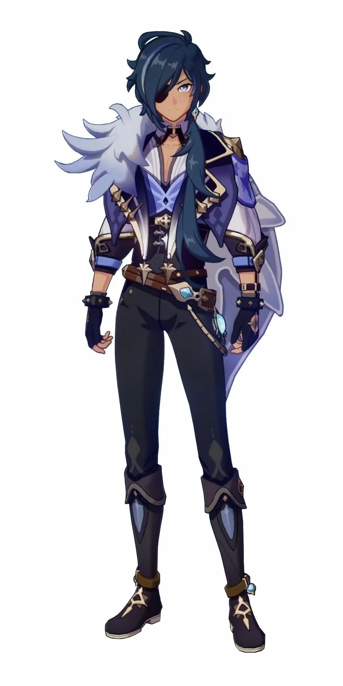
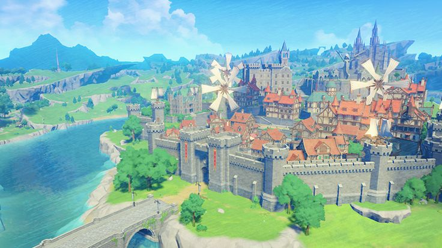
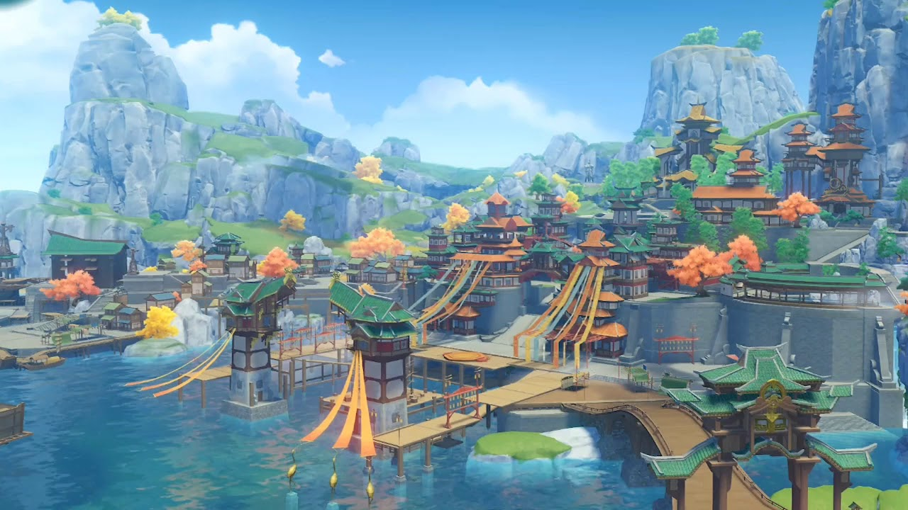
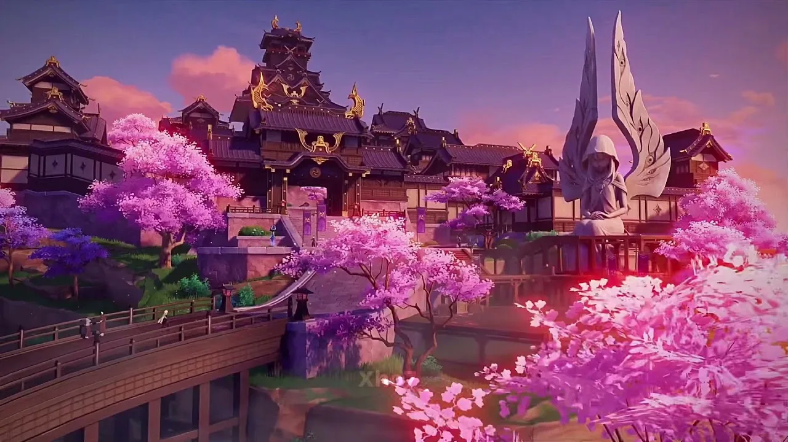

Что такое Genshin Impact
Genshin Impact — это онлайн-видеоигра в жанре action-RPG, разработанная китайской компанией miHoYo и оформленная в стиле аниме.
Игра вышла 28 сентября 2020 года в версиях для Windows, iOS, Android и PlayStation 4. Спустя несколько месяцев игра стала доступна и владельцам приставок PlayStation 5.
Сюжет Genshin Impact незамысловат: брат и сестра по воле злой богини теряют друг друга в волшебном мире под названием Тейват. Игрок, управляющий одним из этих персонажей по своему выбору, должен с помощью встреченных по ходу игры спутников отыскать пропавшего брата или сестру.
Игроку представлена возможность выбора действий: выполнять задания, сражаться с чудищами, разгадывать загадки, строить, охотиться, искать друзей. Играть в Genshin Impact можно как одному, так и с друзьями.
Кто Вас встретит в Genshin Impact
Наивная и задорная девушка, скаут Ордо Фавониус. Благодаря отличному владению планером она стала трехкратным чемпионом Мондштадта по полётам. Будучи восходящей звездой Ордо Фавониус, Эмбер всегда готова к задачам любой сложности.
Редкость: ★★★★
Пол героя: Женский
Стихия: Пиро (Огонь)
Оружие: Лук (Стрелковое)
В Ордо Фавониус Кэйа является доверенным помощником действующего командира Джинн. Он может справиться с любой неразрешимой, на первый взгляд, проблемой.
Все в Мондштадте любят Кэйю, но никто не знает, в чём секрет этого остроумного и очаровательного рыцаря...
Редкость: ★★★★
Пол героя: Мужской
Стихия: Крио (Лёд)
Оружие: Меч (Одноручный меч)

Она — интеллектуальная ведьма, которая никогда не может достаточно вздремнуть.
Будучи библиотекарем Ордо Фавониус, Лиза всегда знает, что нужно делать, чтобы тебя перестали беспокоить.
Как бы она ни любила спать, Лиза всегда находит время, чтобы содержать всё в спокойном духовном порядке.
Редкость: ★★★★
Пол героя: Женский
Стихия: Электро (Электричество)
Оружие: Книга (Каталис)
Мой любимый персонаж (не доступна на старте игры)
Любовь с первого взгляда
Просторы Genshin Impact

Мондштадт
Первый регион, открывающийся игроку на карте Тейвата. Он же самый простой в освоении. Здесь мы встречаем Паймон и начинаем путь к вершинам славы. Ставки ещё не высоки, а потому и вся местная история несерьёзная и сказочная.

Ли Юэ
Богатый портовый город, расположенный в восточной части континента Тейват. Ландшафт региона формируют скалистые горы и каменные леса, обширные равнины и оживлённые побережья. Климат этих земель круглый год переливается пёстрыми цветами и красками.
